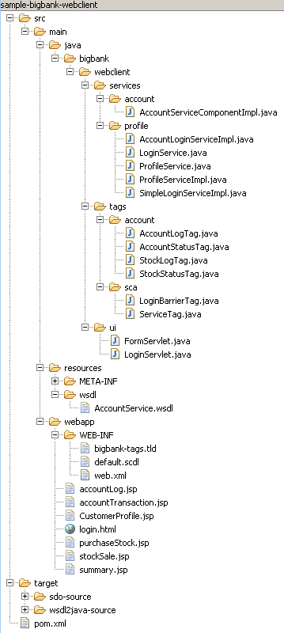
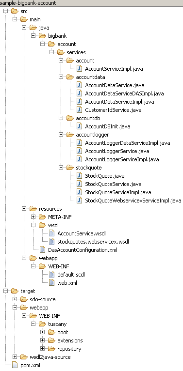

The Tuscany BigBank sample application shows using the Tuscany SCA runtime to build a financial application. There are two modules: webclient provides the front-end user interface and account provides the back-end business services. These are deployed as separate web applications
This sample is located in the samples\applications\bigbank directory. There are two subdirectories in that for the two modules account and webclient.
Obtain the following prerequisites and install according to their documentation.
This sample can be built from the bigbank directory using Maven 2.0.4 with the following command:
mvn
If you have enabled remote deployment in Tomcat by
adding the line:
<user username="admin" password=""
roles="manager"/>
into <tomcat
dir>\conf\tomcat-users.xml you can deploy the
WARs to Tomcat using the tomcat-maven-plugin:
mvn tomcat:deploy
Alternatively you can copy the WAR files to Tomcat's
webapps directory.
copy account\target\sample-bigbank-account.war <tomcat dir>\webapps
copy
webclient\target\sample-bigbank-webclient.war <tomcat dir>\webapps
Once you've started your web server, use your web
browser to view the following URL http://localhost:8080/sample-bigbank-webclient/
You can either use an already pre configured account with
Login as test and
Password as password, or
you can create a new account.
The demo is first configured to use a local mock stock quote
service that returns random stock data. If you want to use
an actual stock quote provider follow these steps:
The sample should now be using the real stock quote provider.
This example illustrates using Tuscany runtime in building a financial Web application using SCA programing model. The following key concepts are covered:
BigBank sample provides the following user services: account
balance, making deposits and withdrawals to purchase
and sell stock, and to view current stock value.
The sample is organized into two SCA modules: webclient and
account. The webclient module functionality is to provide user
information and obtain user input. The account module is used to
retrieve and store user information, account information, current
stock information and the purchasing and selling of stock. The
two modules interact via web services through SCA references and
services.
|

click to
enlarge
|
|
|||||||||||||||||||||||||||||||||||||||||||||||||||||||||||||||||||||||||||
|

click to
enlarge
|
|
||||||||||||||||||||||||||||||||||||||||||||||||||||||||||||||||||
The directions for maven how to build the each module is located in each module's directory in the pom.xml file. The application uses Java 1.5 and thus in the build plugin section needs the following compiler directives:
<plugin>
<groupId>org.apache.maven.plugins</groupId>
<artifactId>maven-compiler-plugin</artifactId>
<configuration>
<source>1.5</source>
<target>1.5</target>
</configuration>
</plugin>Both webclient and account uses three maven
plugins: tuscany-sdo-plugin, tuscany-plugin-wsdl2java,
and tuscany-war-plugin.
The tuscany-sdo-plugin is provided by Tuscany 's SDO project
while the other two are provided by the Tuscany SCA project.
The tuscany-sdo-plugin
references the WSDL's schema and generates all the files
located in target/sdo_source directory. The application
uses these classes as a databinding instead of having to deal
directly with XML that represents form as defined in the
WSDL's schema.
The tuscany-plugin-wsdl2java
plugin generates a Java interface in the target/wsdl2java-source
directory that is used to define the inteface (prottype) in the
wsdl.
The tuscany-war-plugin is
used to add both the Tuscany runtime and any Tuscany
extensions required by the application in the war file.. Looking
at the pom.xml and search for "tuscany-war-plugin" you'll find the
plugin. Which extension you want loaded are specified in
the extensions section. The format
for this closely follows Maven's artifact naming. The
boolean loadExtensionDependencies
option if true will resolve all dependencies for each
extension listed here and also include them in the war file.
The web.xml
file in each module adds necessary "hooks" to initiate and
maintain the Tuscany SCA runtime in a web application host.
<listener> |
This class initializes the Tuscany runtime when the applications is started and helps finalize the Tuscany runtime when the application has ended. |
<servlet> |
This class provides the web applications servlet interface to SCA components. The Axis websevices binding extension requires this. |
<listener> |
This listener helps provide SCA session support . |
The web application can be run in offline or online when
resolving dependencies required by the application or it's
required extensions. This is configured in the web.xml with the
context-param element with a parameter name tuscany.online. If not
specified or set to true, dependencies are resolved by searching
the local war repository, the local Maven repository, and remote
repositories. If specified and set to false, the remote
repositories will not be searched.
Each module's SCA
application SCDL is located in the web application
WEB-INF/default.scdl file. This is the default location,
but within the web.xml it is possible to override this with a
context-param element with the name tuscany.applicationScdlPath.
The Tuscany System SCDL can also be overridden with another
context-param element with the name tuscany.systemScdlPath.
The SCDL used by the BigBank application is defined by
SCA Assembly Model V0.96 , SCA Client and Implementation Model for Java
(V0.95) and the SCA Web Service bindings specifications.
There is one extension to SCDL used by BigBank that is specific
to Tuscany that is used by SDO databinding extension.
The import.sdo element in the SCDL
specifies which SDO factories to register the SDO types.
In the case of BigBank the factory is the class generated
by the tuscany-sdo-plugin maven plugin. An
example of this follows:
<dbsdo:import.sdo xmlns:dbsdo="http://incubator.apache.org/tuscany/xmlns/databinding/sdo/1.0-incubator-M2"
factory="com.bigbank.account.AccountFactory"/>
The Java code for the most part just implements the
Web interface and the SCA components necessary to implement the
business logic. The code uses Java 5.0 annotations as documented
by the SCA Client and Implementation Model for Java
(V0.95) specifications. The samples uses one annotation that
is an Tuscany extension that is used by the databinding framework
to identify that the components expect to SDO s for complex data
types. An example of this is seen in the AccountService interface
which has the @DataType(name="commonj.sdo.DataObject")
annotation.
The Relational Database DAS (RDB DAS) is used in this sample to access relational data in terms of SDOs. All the code pertaining to this usage is contained to two one files: AccountDataServiceDASImpl.java and DasAccountConfiguration.xml. The java file provides code that instantiates and invokes the DAS and the XML file provides RDB DAS configuration.
The sample demonstrates a few of the RDB DAS capabilities including:
This sample does not currently demonstrate a few other key DAS features including Object relationships, optimistic concurrency control, and the use of convention over configuration. User level documentation for the RDB DAS can be found in the RDBDAS User's Guide.
This sample uses the RDB DAS as a utility. A future version of this sample will access the DAS as an SCA service.
){kind=link}
){kind=link}
){kind=link}
){kind=link}